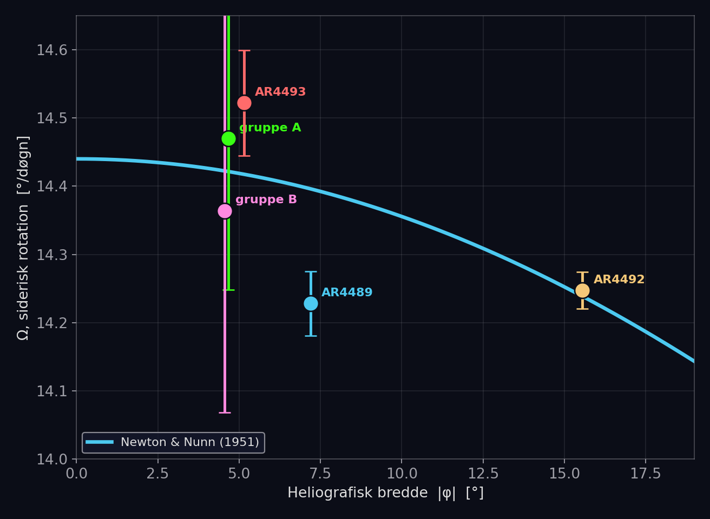
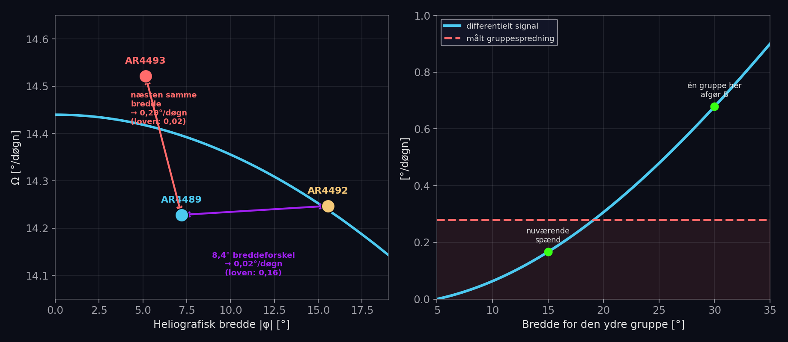
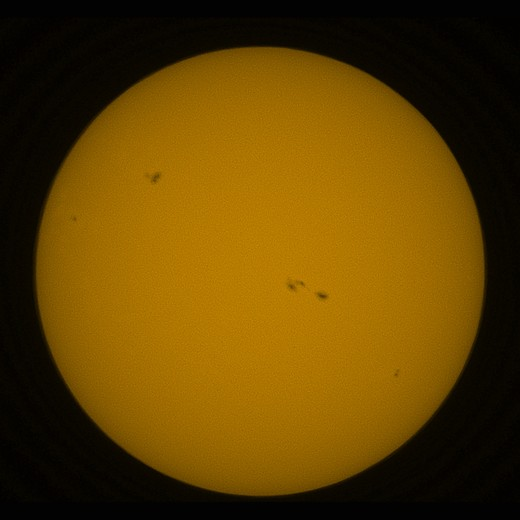
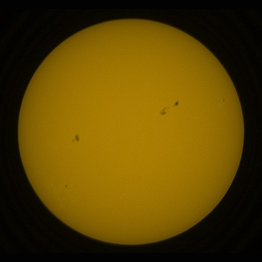
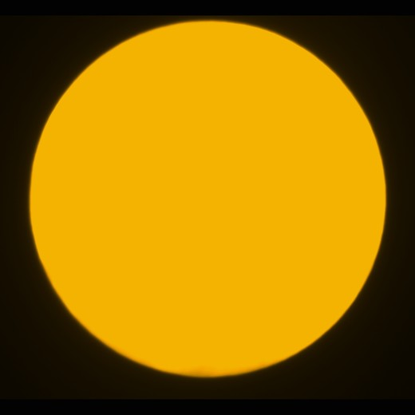
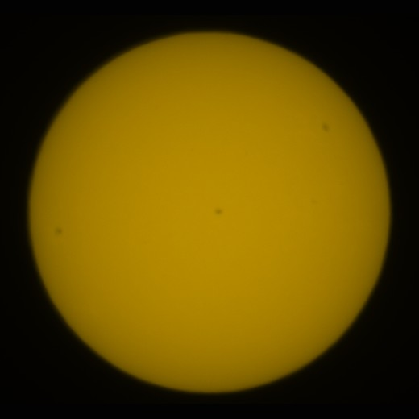
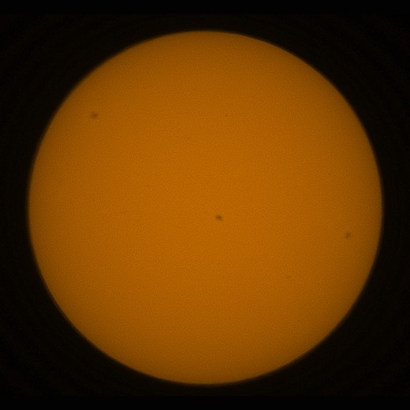
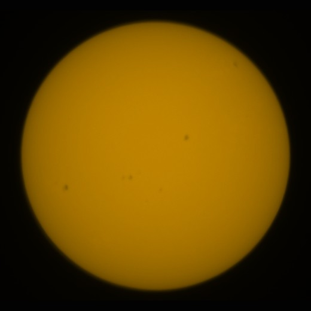

The Sun does not rotate like a solid ball. That was already known in the 1630s, when the first observers followed sunspots across the disc and discovered that spots near the equator go round the Sun faster than spots closer to the poles — one of the earliest proofs that the Sun is not a solid body. Measuring it myself, with a consumer telescope from a back garden in Denmark, sounded like a manageable summer-holiday project. It turned into a month and a half of daily images, five self-discovered errors, and a result that both succeeded and did not succeed.
The question and the equipment
The equipment is a Unistellar eVscope2, an 11.4 cm catadioptric telescope with a built-in solar filter and automatic image stacking — not a research instrument, but sharp enough to show sunspots clearly on a white-light solar disc.
The question was concrete: from a series of images over a few weeks, can one re-measure the classical relation between the rotation rate Ω of sunspots and their heliographic latitude φ, first mapped by Newton and Nunn in 1951 from thousands of professional spot measurements?
A is the rotation at the equator itself; B describes how much slower the rotation becomes towards the poles — the differential rotation itself, the driving force behind the Sun's magnetic field.
From image to latitude
Each image shows a flat disc with a couple of dark spots. The Sun's axis of rotation is not vertical in the image — the camera's orientation relative to the sky changes hour by hour, because the eVscope2 sits on an alt-azimuth mount without a derotator. The angle is called the parallactic angle:
With q known, the image can be rotated back so that the Sun's own axis points straight up. From here it is pure projection geometry: a spot, measured as a distance from the centre of the disc, is lifted onto a spherical surface and rotated into the heliographic coordinate system — out come latitude and longitude. Adding the Sun's known rigid rotation rate (Carrington's constant, 14.1844°/day), the drift in the spots' longitude, day by day, gives the very rotation one is looking for.
The whole chain has been validated independently against NOAA/USAF's daily Solar Region Summary: 43 latitude measurements matched the official positions with a scatter of 0.7° — without a single fitted free parameter in the geometry.
Wrong five times before it was right
The most instructive part of the process was not the physics, but the errors, which along the way looked like physics and turned out to be technicalities.
Tidszonen
The eVscope2 writes the timestamp in the file name in UTC, not local time. The error — two hours in summer time — went undetected through five versions of the running status report, because the roll angle was fitted for each image and silently absorbed the error. When the time was corrected, the instrument turned out to have no measurable roll at all.
Randproblemet
Near the edge of the solar disc, the projection strongly compresses the longitudes. The first solution was to discard all measurements near the limb — but the projection is mathematically exactly invertible; the problem is not the geometry, but that measurements near the limb are less precise, not wrong. The right treatment is to weight each measurement according to its precision, not to set a hard limit and throw data away.
The limb finder itself
A threshold-based method for finding the edge of the disc broke down in light cloud — and on Unistellar's annotated images, where a thin white ring was misread as the solar limb itself. A gradient-based limb finder, which looks for the steepest drop in brightness instead of a fixed brightness level, solved both problems at once.
Gruppematchning
Two new spot groups, only 12° apart in longitude, were confused by a search window that was too wide and gave a physically impossible rotation rate. The solution: make the search window narrower than the distance between neighbouring groups. The lesson sticks: a result that contradicts all known physics is a reason to look for an error in the analysis — not a reason to dismiss it straight away as noise.
What the errors had in common: each of them, until it was found, looked like an interesting physical conclusion. None of them was — and each correction brought the result closer to accepted physics, never further away.
The result: two answers, not one
The best-followed group, AR4492, was tracked through eight whole days, 13 times, at a heliographic latitude of 15.6°.

Another, completely independent group at 5° latitude gave the same good agreement. But the coefficient B — the differential rotation itself — could not be determined:
Newton & Nunn (1951)
- Basis
- thousands of spot measurements
- Tidsspand
- several solar cycles
- B
- 2.8°/day
The back-garden study
- Basis
- 5 pletgrupper
- Tidsspand
- 16 days
- B
- 0.8 ± 0.7°/day
Why B escaped
Not a contradiction of physics — a consequence of where the study's groups happened to lie. Two groups 8.4° apart in latitude turned out to rotate practically identically, while two groups at almost the same latitude differed by as much as 0.29°/day. Sunspot groups are not perfect markers of the motion of the plasma; the scatter between groups turned out to be about 0.28°/day, measured independently three times.

That figure is larger than the very signal that was to be measured: over the latitude range the study's groups actually covered (5° to 16°), the law predicts a difference of only 0.17°/day between the extremes. Had just one group been at 25–30° latitude instead, a handful of groups would have been enough.
A spot that lived too briefly
On 29 July, two independent images taken three seconds apart caught a small darkening at a heliographic latitude of 37° — higher than anything else seen in the study. The core was 4–5 % darker than the background in both images, a genuine and reproducible signal. But at the same place, five hours earlier the same day and again a day later, there was nothing to be seen.
The spot had appeared and disappeared again within the time span in which one observer could manage to catch it twice.
That is what one must expect of an ephemeral region — a small, short-lived magnetic bipole that never develops into a numbered active region. Common in solar physics, but rarely captured so concretely by amateur equipment.
Billedgalleri
A selection of the raw eVscope2 exposures on which the study is based.






Perspective
Two things distinguish this from a failure. First: each of the five errors found and corrected along the way brought the result closer to accepted physics — the very hallmark of a genuine error rather than a fit to a desired answer. Second: the study now knows precisely what is missing. Not more data of the same kind, but one sunspot group at a different latitude. Solar cycle 25 is on its way down, but the first groups of cycle 26 will very probably appear at exactly 25–30° latitude. The telescope is still pointed at the Sun every clear day.